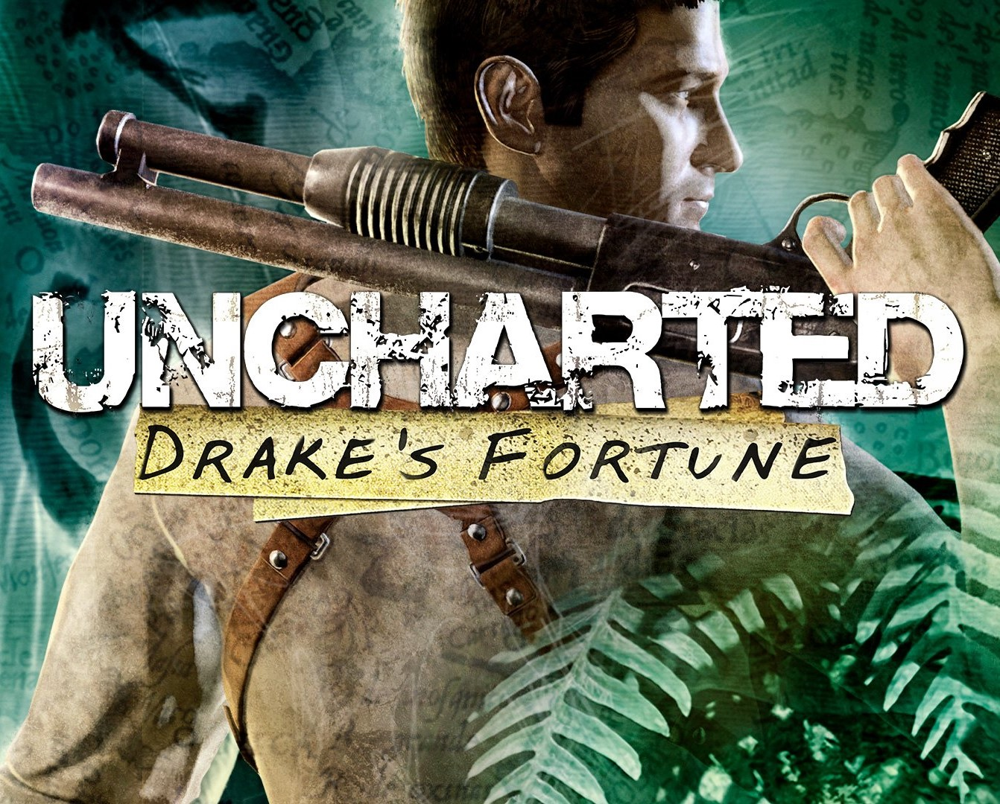
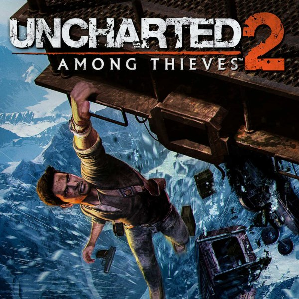
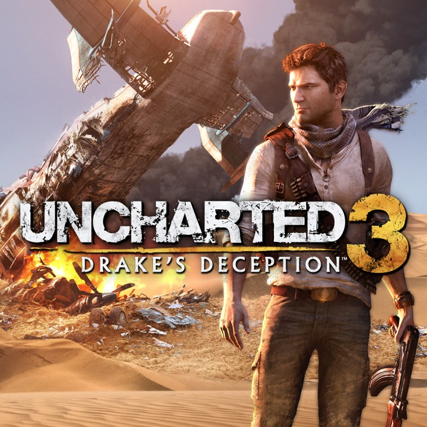
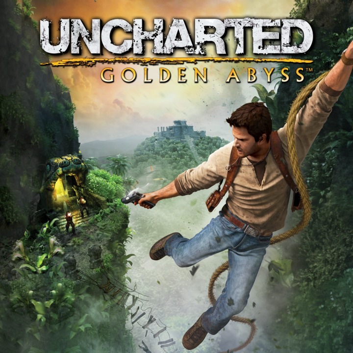

UNCHARTED: DRAKE'S FORTUNE
Uncharted
Uncharted: Drake's Fortune je akční dobrodružná hra z roku 2007 vyvinutá společností Naughty Dog a vydaná společností Sony Computer Entertainment. Je to první hra ze série Uncharted a byla vydána v listopadu 2007 pro PlayStation 3. Hra kombinuje akční adventuru a platformové prvky s perspektivou třetí osoby a sleduje Nathana Drakea, údajného potomka průzkumníka Sira Francise Drakea, když s pomocí novinářky Eleny Fisher a mentora Victora Sullivana hledá ztracený poklad El Dorada.
Vývoj Uncharted: Drake's Fortune začal v roce 2005 a viděl, jak Naughty Dog změnili svůj přístup k vývoji, když se snažili vytvořit humanizovanou videohru, která se odlišovala od jejich ostatních položek. Následně byl během svého vývoje mnohokrát zpožděn, protože tým pravidelně aktualizoval nebo zcela měnil různé aspekty související s příběhem, kódováním a designem hry. Uncharted: Drake's Fortune je pozoruhodný tím, že je jednou z prvních videoher, které obsahují vibraci se zpětnou vazbou a vývojový tým našel vliv na mnoho estetických prvků hry z filmu, pulpových časopisů a filmových seriálů.
Uncharted: Drake's Fortune, široce uváděný na trh jako exkluzivita pro PlayStation, získal obecně příznivé recenze, přičemž mnoho kritiků uvádělo jeho technické úspěchy, hlasové herectví, postavy, příběh, hudební skóre, smysl pro detail a jeho vysoké produkční hodnoty, podobně jako u letních filmových trháků. . Někteří kritizovali grafické problémy, délku, úseky vozidel a výraznou obtížnost. Po prvních deseti týdnech vydání se hry prodalo milion kopií a pomohla posunout Naughty Dog do popředí jako vývojář videoher. Po něm následovalo pokračování s názvem Uncharted 2: Among Thieves v roce 2009 a bylo znovu vydáno na PlayStation 4 jako součást Uncharted: The Nathan Drake Collection.
Lovec pokladů Nathan „Nate“ Drake (Nolan North), doprovázený reportérkou Elenou Fisher (Emily Rose), získává rakev svého samozvaného předka Sira Francise Drakea, když ji lokalizoval podle souřadnic zapsaných na rodinném dědictví: prsten, který Nate nosí. kolem krku. Rakev obsahuje deník Sira Francise Drakea, který uvádí polohu El Dorada. Piráti zaútočí a zničí Nateovu loď, ale Nateův přítel a mentor Victor „Sully“ Sullivan (Richard McGonagle) je zachrání ve svém hydroplánu. Nate a Sully se ze strachu, že Elenino zpravodajství přitáhne potenciální rivaly, opustí v doku.
Po deníku na uvedené místo objeví Nate a Sully výklenek, ve kterém byla kdysi velká socha, a uvědomí si, že El Dorado není město, ale spíše zlatý idol. Najdou nacistickou ponorku, která obsahuje stránku z Drakeova deníku ukazující, že socha byla převezena na ostrov. Žoldáci vedení zločincem Gabrielem Romanem (Simon Templeman), kterému Sully dluží obrovský dluh, a jeho poručík Atoq Navarro (Robin Atkin Downes) však Natea a Sullyho zadrží. Sully je zdánlivě zabit výstřelem do hrudi, ale Nate dokáže utéct, narazí na Elenu a letí s ní na ostrov.
Na cestě protiletadlová palba donutí Elenu a Natea vypadnout a jsou odděleni. Po vyzvednutí zásob z havarovaného hydroplánu se Nate vydá ke staré pevnosti, aby našel Elenu. Elena, krátce zajatá piráty vedenými jeho starým společníkem Eddym Rajou (James Sie), osvobodí Natea a oni prchají do staré celnice na ostrově. Po nalezení záznamů ukazujících, že socha byla přemístěna dále do vnitrozemí, zjistí, že Sully je naživu a doprovází Romana a Raju. Nate a Elena najdou a zachrání Sullyho, který poté, co přežil díky Drakeovu deníku blokujícímu kulku, vysvětluje, že získával čas pro Natea tím, že Romana uvedl v omyl.
Při pátrání v tunelech kláštera Nate zaslechne hádku mezi Romanem, Navarrem a Eddym a odhalí, že Roman najal Eddyho, aby zajal Natea a zabezpečil ostrov, přičemž odměnou je podíl z El Dorada. Po Nateově útěku Roman pochybuje o Eddyho schopnostech a ignoruje jeho tvrzení, že něco prokletého na ostrově zabíjí jeho muže, což ho vede k propuštění Eddyho a jeho posádky. Přeskupení Nate a Elena najdou průchod vedoucí k trezoru s pokladem, ve kterém najdou tělo Drakea, za předpokladu, že zemřel při hledání pokladu. Narazí na vyděšeného Eddyho a člena posádky krátce předtím, než je napadnou zmutovaní lidé, kteří člena posádky zabijí; i přes Nateovo úsilí je Eddy také zabit, když ho jeden vtáhne do jámy.
Nate a Elena utečou a ocitnou se v opuštěném německém bunkru. Nate, když se pustí do základny, zjistí, že Němci hledali sochu během druhé světové války, ale stejně jako Španělé před nimi se ze sochy stali prokleti, což z nich způsobilo, že se stali mutanty. Sir Francis, který věděl o síle sochy, se ji pokusil udržet na ostrově zničením lodí a zaplavením města, než byl také zabit mutanty.
Nate se vrací, aby zjistil, že Elenu zajali Roman a Navarro. Přeskupí se se Sullym a nedokáže jim zabránit v dosažení sochy. Navarro, který o kletbě ví, přiměje Romana, aby sochu otevřel a odhalil, že jde o sarkofág obsahující mumii infikovanou vzduchem přenášeným mutagenním virem. Když se Roman proměnil v jednoho z mutantů, Navarro ho zabije a převezme kontrolu nad jeho muži a plánuje prodat virus jako biologickou zbraň. Nate skočí na sarkofág a jede na něm, když je letecky přepravován na loď v zátoce. Zaútočí a porazí Navara a podaří se mu potopit sarkofág i jeho na dno oceánu. Sully přijíždí a poté, co si Nate a Elena projeví vzájemnou náklonnost, opouštějí ostrov s několika truhlami pokladů.
UNCHARTED: AMONG THIEVES
Uncharted II
Uncharted 2: Among Thieves je akční dobrodružná hra z roku 2009 vyvinutá společností Naughty Dog a vydaná společností Sony Computer Entertainment. Je to druhá hra ze série Uncharted a byla vydána v říjnu 2009 pro PlayStation 3. Příběh pro jednoho hráče se odehrává dva roky po událostech Drake's Fortune a sleduje Nathana Drakea, který je partnerem Chloe Frazer a Eleny Fisher. hledejte kámen Cintamani a město Shambhala a zároveň bojujte se skupinou žoldáků vedenou válečným zločincem Zoranem Lazarevićem.
Vývoj pro Uncharted 2: Among Thieves začal bezprostředně po kritickém a komerčním úspěchu prvního příspěvku. Vývojový tým čerpal inspiraci od průzkumníka Marca Pola a konkrétně z jeho výprav po souostrovích a východní Asii. Naughty Dog se také zaměřil na vylepšení proprietárního enginu hry a vytvořil hru tak, aby běžela výhradně na systému společnosti Naughty Engine 2.0. To vývojářům umožnilo zaznamenat rozsáhlé zachycování pohybu a více filmových sekvencí ve hře, stejně jako zahrnout online komponentu pro více hráčů; první pro sérii.
Uncharted 2: Among Thieves získalo uznání kritiků za své propracované výpravy, design postav, vyprávění příběhu, grafiku, technické inovace a herní mechanismy. Získala ocenění Hra roku z mnoha publikací a ocenění a je považována za jednu z největších videoher všech dob a za jeden z nejvýznamnějších titulů sedmé konzolové generace. To také mělo velký komerční úspěch, s více než šesti miliony prodaných kopií po celém světě. Po hře následovalo pokračování s názvem Uncharted 3: Drake's Deception v roce 2011 a bylo znovu vydáno na PlayStation 4 jako součást Uncharted: The Nathan Drake Collection.
Uncharted 2 je akční dobrodružná platformová videohra hraná z pohledu třetí osoby, přičemž hráč ovládá Nathana Drakea. Drake je fyzicky zdatný a dokáže skákat, lézt a šplhat po úzkých římsách a stěnách, aby se dostal mezi body. Drake může být vybaven až dvěma střelnými zbraněmi – jednou jednoruční a jednou obouruční – a omezenou zásobou granátů. Drake může sebrat zbraně a automaticky nahradit stávající zbraň, kterou používal, a další munici od zabitých nepřátel. Hráč může nařídit Drakeovi, aby se skryl za rohy nebo nízké zdi, a to buď cílenou palbou, nebo střelbou naslepo, aby zabil své nepřátele. Hráč může také střílet Drake během pohybu. Pokud Drakea jeho nepřátelé neodhalí, může se hráč pokusit o jejich odstranění pomocí stealth, například tím, že se za nimi připlíží a srazí je jedním zásahem, nebo přetáhne nic netušícího nepřítele přes římsu, ze které Drake visí. Ve většině oblastí, pokud jsou všichni nepřátelé, kteří hlídkují, pokradmu zabiti, ostatní vlny, které by se normálně objevily, ne. Některé oblasti hry vyžadují, aby hráč řešil hádanky pomocí Drakeova deníku, který poskytuje vodítka k řešení hádanek. Když je povolen, systém nápověd poskytuje herní vodítka, jako je směr dalšího cíle.
UNCHARTED: DRAKE'S DECEPTION
Uncharted III
Uncharted 3: Drake's Deception je akční dobrodružná hra z roku 2011 vyvinutá společností Naughty Dog a vydaná společností Sony Computer Entertainment. Je to třetí hra ze série Uncharted a vyšla v listopadu 2011 pro PlayStation 3. Příběh pro jednoho hráče sleduje Nathana Drakea, který spolupracuje se svým mentorem Victorem Sullivanem při pátrání po legendárním ztraceném městě Iram of the Pillars. , zatímco soutěží se skupinou žoldáků vedenou Sullivanovou bývalou zaměstnavatelkou Katherine Marloweovou.
Vývoj pro Uncharted 3: Drake's Deception začal v roce 2010. Poprvé v historii společnosti se Naughty Dog rozdělil na dva týmy; zatímco jeden tým vyvinul Uncharted 3, druhý vyvinul The Last of Us. K vývoji se přistoupilo se začleněním lokací odlišných od předchozích položek série, přičemž tým se rozhodl pro poušť a městské oblasti, zatímco inspiraci pro děj čerpal od archeologa T. E. Lawrence. Naughty Dog se také snažil vylepšit otevřenost a realističnost hry, což bylo provedeno zvýšením objemu zachycení pohybu a hlasového hraní, jakož i prováděním terénního výzkumu pro lepší vizuální prostředí a zvuky. Vývojářský tým se také snažil vylepšit systém pro více hráčů, který zahrnoval nové kompetitivní a kooperativní režimy, přičemž hra je také pozoruhodná tím, že je jednou z prvních, která nese novou online funkci PlayStation Network Pass.
Uncharted 3: Drake's Deception získal uznání kritiků za své hlasové herectví, grafiku, psaní, příběh a filmovou kvalitu. Někteří kritizovali její linearitu a považovali ji za horší než Uncharted 2. Hra získala ocenění Hra roku od mnoha publikací a ocenění a zaznamenala komerční úspěch, po celém světě se prodalo přes šest milionů kopií, což z ní dělá jednu z nejprodávanějších PlayStation 3. hry. Po hře následovalo pokračování s názvem Uncharted 4: A Thief's End v roce 2016 a bylo znovu vydáno na PlayStation 4 jako součást Uncharted: The Nathan Drake Collection.
Uncharted 3: Drake's Deception je akční dobrodružná platformová videohra hraná z pohledu třetí osoby, kdy hráč ovládá Nathana Drakea. Drake má velké množství různých animačních sad, které mu umožňují reagovat podle svého okolí. Drake je fyzicky zdatný a je schopen skákat, sprintovat, šplhat, plavat, šplhat po úzkých římsách a stěnách, aby se dostal mezi body, a provádět další akrobatické akce. Drake se nyní může utkat s protivníky více způsoby než dříve: osobní boj s více protivníky, kontextové útoky na blízko a nové možnosti stealth. Uncharted 3 také nabízí rozšířené a rozmanité traverzální pohyby s hlubokou přestřelkou. Drake může být vybaven až dvěma střelnými zbraněmi – jednou jednoruční a jednou obouruční – a čtyřmi granáty. Drake může sebrat zbraně a automaticky nahradit stávající zbraň, kterou používal, a další munici od sestřelených nepřátel.
Hráč může nařídit Drakeovi, aby se skryl za rohy nebo nízké zdi, a to buď cílenou palbou, nebo střelbou naslepo, aby zabil své nepřátele. Hráč může také střílet Drake během pohybu. Pokud Drakea jeho nepřátelé neodhalí, může se hráč pokusit použít stealth, aby je odstranil, například tím, že se za nimi připlíží a zabije je jedním zásahem, nebo spadne na nepřítele, když Drake visí na římse. Stealth mechanika byla zjednodušena a vylepšena. Některé oblasti hry budou vyžadovat, aby hráč řešil hádanky pomocí Drakeova deníku, který poskytuje vodítka k řešení hádanek. Když je povolen, systém nápověd poskytuje herní vodítka, jako je směr dalšího cíle.
UNCHARTED: A THIEF'S END

Uncharted IV
Uncharted 4: A Thief's End je akční dobrodružná hra z roku 2016 vyvinutá společností Naughty Dog a vydaná společností Sony Computer Entertainment. Je to čtvrtá hlavní položka v sérii Uncharted. Odehrávající se několik let po událostech z Uncharted 3: Drake's Deception, hráči ovládají Nathana Drakea, bývalého lovce pokladů, kterého jeho předpokládaný mrtvý bratr Samuel přemluvil z důchodu. S Nathanovým dlouholetým partnerem Victorem Sullivanem hledají stopy po umístění dávno ztraceného pokladu Henryho Averyho. A Thief's End se hraje z pohledu třetí osoby a obsahuje prvky plošinovky. Hráči řeší hádanky a k boji s nepřáteli používají střelné zbraně, boj na blízko a stealth. V online režimu pro více hráčů se až deset hráčů zapojí do kooperativních a soutěžních režimů.
Vývoj Uncharted 4 začal v roce 2011, krátce po vydání Uncharted 3. Vedli ho kreativní ředitelka Amy Hennig a herní ředitel Justin Richmond. Vývoj byl brzděn v roce 2014 kvůli odchodu Henniga a Richmonda z Naughty Dog; nahradili je Neil Druckmann a Bruce Straley. Tým se snažil začlenit prvky hry v otevřeném světě s většími úrovněmi, které by podpořily průzkum a boj ve volném pohybu. Vztah mezi Nathanem a Elenou byl ústřední a Naughty Dog se je pokusil polidštit více než v předchozích hrách. A Thief's End vyšlo v květnu 2016 pro PlayStation 4. Byla to první hra Naughty Dog vyvinutá speciálně pro PlayStation 4. Tým využil hardware ke zpracování větších dynamických prostředí.
Po svém oznámení v listopadu 2013 byl A Thief's End široce očekáván. Hra byla oceněna kritiky, chválí její hratelnost, příběh, emocionální hloubku, vizuální stránku a multiplayer. Několik recenzentů považovalo hru za důstojné zakončení Nathanova příběhu. Získala několik ocenění na konci roku, včetně cen Game of the Year od několika herních publikací, kritiků a herních ceremoniálů. S více než 15 miliony prodaných kopií jde o nejprodávanější hru Uncharted a jednu z nejprodávanějších her pro PlayStation 4. Samostatné rozšíření, Uncharted: The Lost Legacy, bylo vydáno v roce 2017. Remasterovaná verze, spolu s The Lost Legacy jako součást Uncharted: Legacy of Thieves Collection, byla vydána v lednu 2022 pro PlayStation 5 a bude vydána později v roce 2022. pro Microsoft Windows.
Uncharted 4: A Thief's End je akční adventura hraná z pohledu třetí osoby s prvky plošinovky. Hráči procházejí několika prostředími, pohybují se lokacemi včetně měst, budov a divočiny, aby postoupili příběhem hry. Hráči používají střelné zbraně, boj na blízko a stealth k boji proti nepřátelským nepřátelům. Po většinu hry hráči ovládají Nathana Drakea – lovce pokladů, který je fyzicky zdatný a dokáže skákat, sprintovat, lézt, plavat, šplhat po úzkých římsách a stěnách, houpat se s lanem, používat hák a provádět další akrobatické akce. . Hráči také řídí vozidla během některých herních segmentů.
UNCHARTED: GOLDEN ABYSS
Uncharted: Golden Abyss
Uncharted: Golden Abyss je akční dobrodružná hra z roku 2011 vyvinutá společností Bend Studio a vydaná společností Sony Computer Entertainment jako úvodní titul pro PlayStation Vita. Spin-off série Uncharted, hry vydané v Japonsku v roce 2011 a v dalších regionech v roce 2012. Golden Abyss je prequel k sérii, který se odehrává před událostmi Uncharted: Drake's Fortune. Příběh se točí kolem dobrodruha a lovce pokladů Nathana Drakea, který se zaplete do pátrání po ztraceném městě Quivira a pomáhá mu jeho kolegyně hledače pokladů Marisa Chase. Hra kombinuje akční dobrodružství s prvky plošinovek, přičemž hráči řeší hádanky a bojují s nepřáteli pomocí střelby z pohledu třetí osoby založené na krytí.
Koncepční práce pro Golden Abyss začaly v roce 2008, kdy Sony požádalo Bend Studio, aby vyvinulo nový Uncharted jako titul pro uvedení konzole. Kvůli měnícím se specifikacím Vita byla velká část raného vývoje provedena pomocí hardwaru PlayStation 3. Na celý projekt dohlížel původní vývojář Naughty Dog, přičemž Bend Studio obdrželo prostředky z prvních dvou titulů Uncharted a získalo přístup k jejich zařízením pro snímání pohybu. John Garvin byl režisérem i scénáristou, druhý jmenovaný pod dohledem spisovatelky hlavní série Amy Hennigové. Hennig také zajistil návrat Nathanova hlasového herce Nolana Northa a prověřil nové členy obsazení.
Hra byla odhalena v lednu 2011 spolu s Vita. Golden Abyss debutoval díky silným prodejům a obecně pozitivnímu kritickému přijetí. Novináři chválili jeho grafiku, hlasové výkony a oživení hry Uncharted na platformě. Kritika se soustředila na jeho příběh a implementaci ovládacích prvků specifických pro Vita. K dnešnímu dni zůstává hra exkluzivní pro platformu, protože byla vynechána z PlayStation 4's Uncharted: The Nathan Drake Collection kvůli samostatné povaze jejího vyprávění.
Uncharted: Golden Abyss je akční dobrodružná hra hraná z pohledu třetí osoby s prvky platformingu a puzzle. Hráč ovládá hlavního hrdinu série Uncharted Nathana Drakea. Nathan postupuje řadou lineárních úrovní a prozkoumává různá prostředí včetně džungle, ruin chrámů, jeskyní a táborů.
Během plošinování Nathan šplhá po římsách a skáče mezi plošinami vytvořenými prostředími. Některé úrovně obsahují více cest a skrytých oblastí se sběratelskými poklady. Během některých úseků Nathan také plave přes vodní plochy a vesluje na kánoi po řece. V boji může Nathan používat kradmé sundání a zapojit se do střelby z pohledu třetí osoby proti skupinám nepřátel. Střílet lze buď přesným mířením, nebo střelbou naslepo. Nathan může zvednout a používat různé zbraně, včetně pistolí, kulometů, brokovnic, raketometů a granátů.
Ovládání hry využívá kombinaci tradičních příkazů joysticku a tlačítek a pohybových a dotykových funkcí PlayStation Vita. Pohybové ovládání hraje roli při zaměřování Nathanových zbraní nebo balancování při překračování na napjatých lanech, zatímco přejíždění po dotykové obrazovce lze použít k vedení Nathana prostředím a kolem něj a je povinné při provádění útoků na blízko. Některé melee sekce se hrají podobným způsobem jako quick time eventy. Některé hádanky zahrnují použití dotykové obrazovky k odhalení vodítek nebo úpravě mechanismů. Funkce zpětného dotyku umožňují hráči přiblížit pohled kamery zbraně a pořizovat snímky v prostředí.
UNCHARTED: THE LOST LEGACY

Uncharted: The Lost Legacy
Uncharted: The Lost Legacy je akční dobrodružná hra z roku 2017 vyvinutá společností Naughty Dog a vydaná společností Sony Interactive Entertainment. Jedná se o samostatné rozšíření k Uncharted 4: A Thief's End. Hráči ovládají Chloe Frazer, která hledá Ganeshův kel v pohoří Západní Ghát v Indii, s pomocí bývalé žoldnéřky Nadine Rossové a brání nelítostnému vojevůdci a jeho armádě povstalců v rozpoutání občanské války v zemi. Je to první hra Uncharted, která neobsahuje hlavního hrdinu série Nathana Drakea.
Stejně jako ostatní hry Uncharted se i The Lost Legacy hraje z pohledu třetí osoby; hráči používají střelné zbraně a mohou používat boj na blízko a plížení k obraně před nepřáteli. Hráči řeší hádanky, začleňují několik prvků plošinovky, aby pokročili ve vyprávění, a procházejí herním světem pěšky nebo autem. Vývoj hry The Lost Legacy začal brzy po vydání Uncharted 4: A Thief's End v květnu 2016. Staví na herních prvcích zavedených v předchozích titulech Uncharted s více otevřeným koncem. Těžištěm hry je Chloe, vedlejší postava, která se objevila v předchozích hrách Uncharted jako přítelkyně, milenka a společník Nathana Drakea, přičemž její příběh, design a herní prvky odrážejí její postavu. Claudia Black, Laura Bailey a Troy Baker si zopakovali své role jako Chloe, Nadine a Sam pomocí hlasového a pohybového snímání a asistovali spisovateli Joshovi Scherrovi a kreativnímu řediteli Shaunu Escaygovi s vývojem postav a příběhu.
The Lost Legacy vyšlo pro PlayStation 4 v srpnu 2017; remasterovaná verze pro PlayStation 5 byla vydána v lednu 2022 a pro Microsoft Windows bude vydána později v roce 2022. Kritická odezva na hru byla pozitivní.
Uncharted: The Lost Legacy je akční adventura hraná z pohledu třetí osoby s prvky plošinovky. Hráči používají střelné zbraně, boj na blízko a stealth k obraně proti nepřátelským nepřátelům. Hráči ovládají Chloe Frazer – lovkyni pokladů, která je fyzicky zdatná a dokáže skákat, sprintovat, lézt, plavat, houpat se a provádět další akrobatické akce. Hráči procházejí několika prostředími, pohybují se lokacemi včetně měst, budov a chrámů, aby postoupili příběhem hry. Hráči používají střelné zbraně, boj na blízko a stealth k obraně proti nepřátelským nepřátelům. Hráči také řídí vozidla během některých herních segmentů.